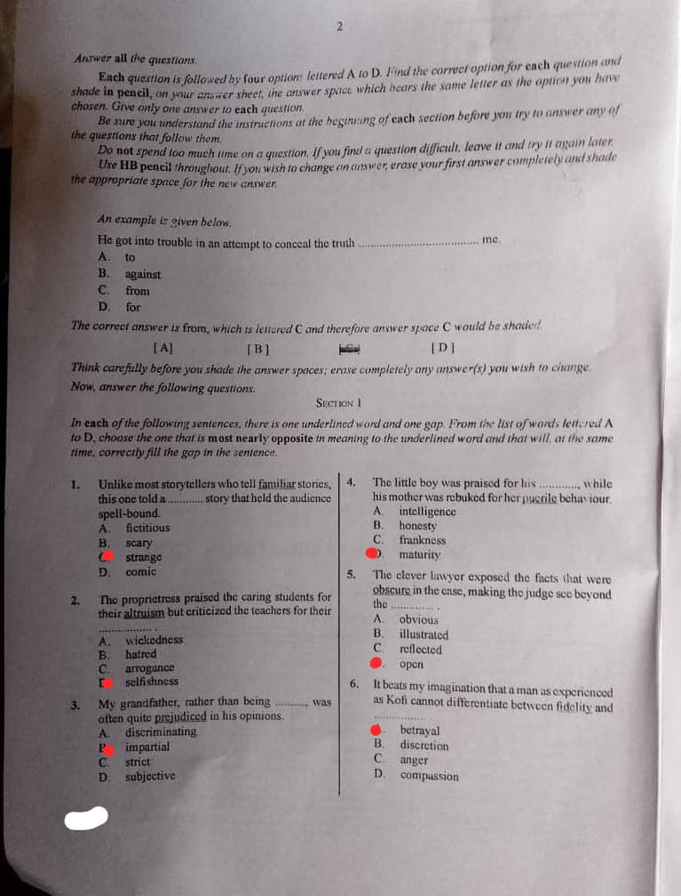
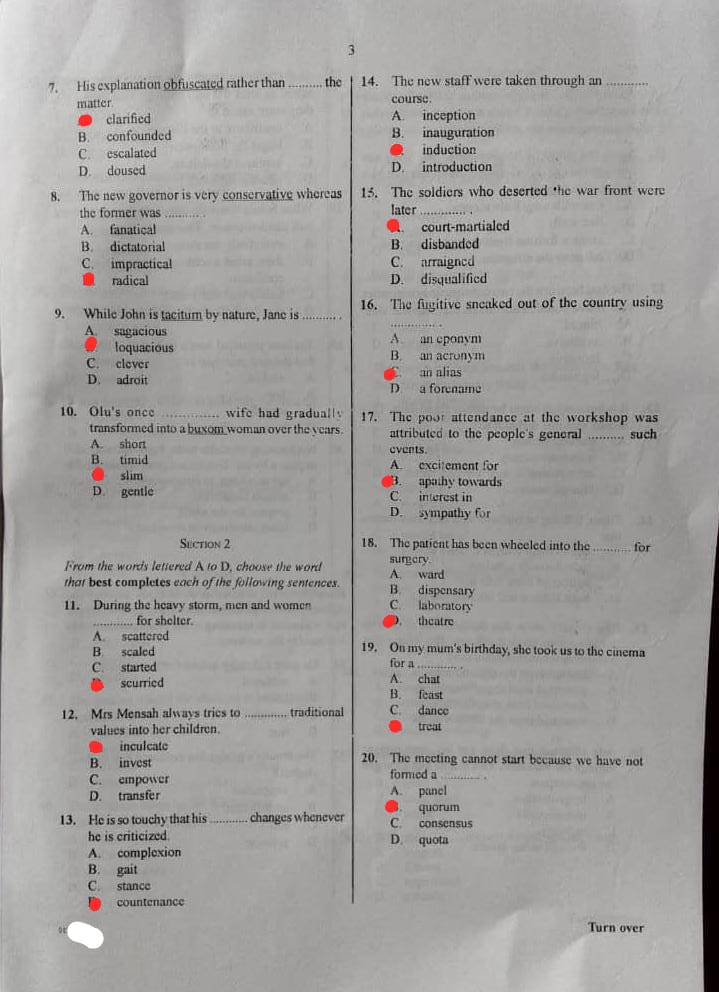
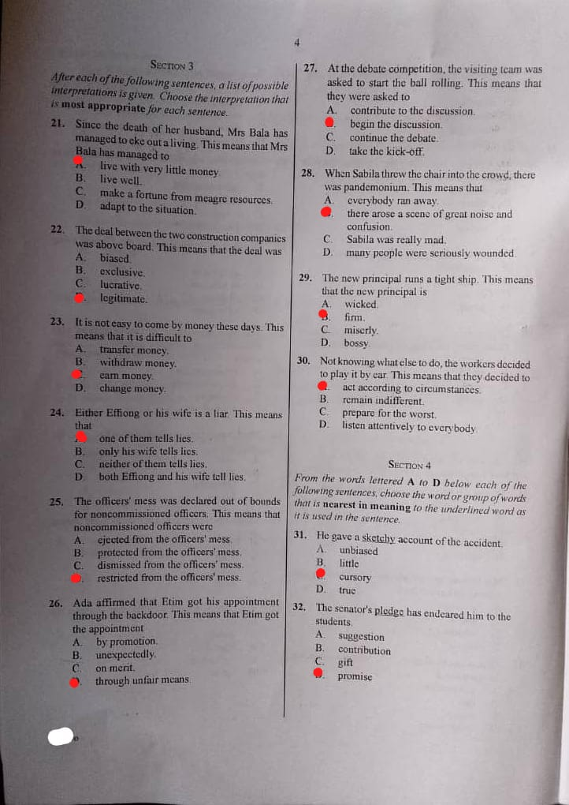
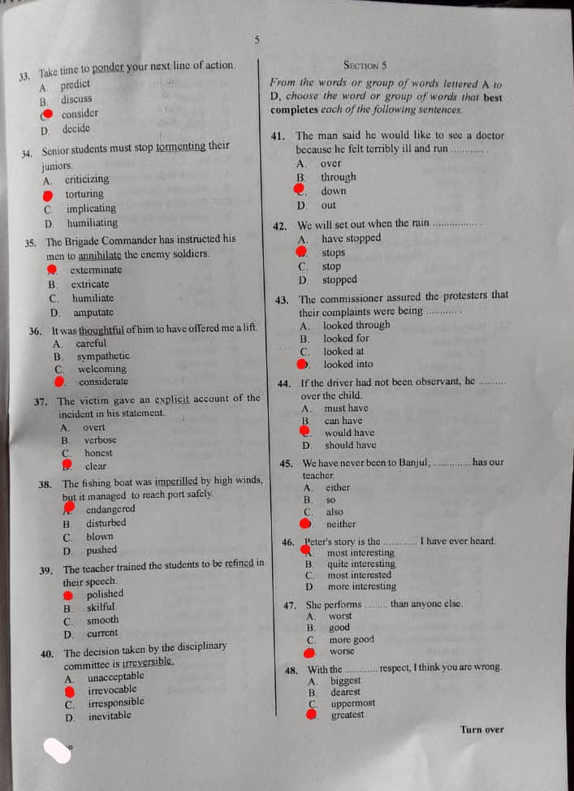
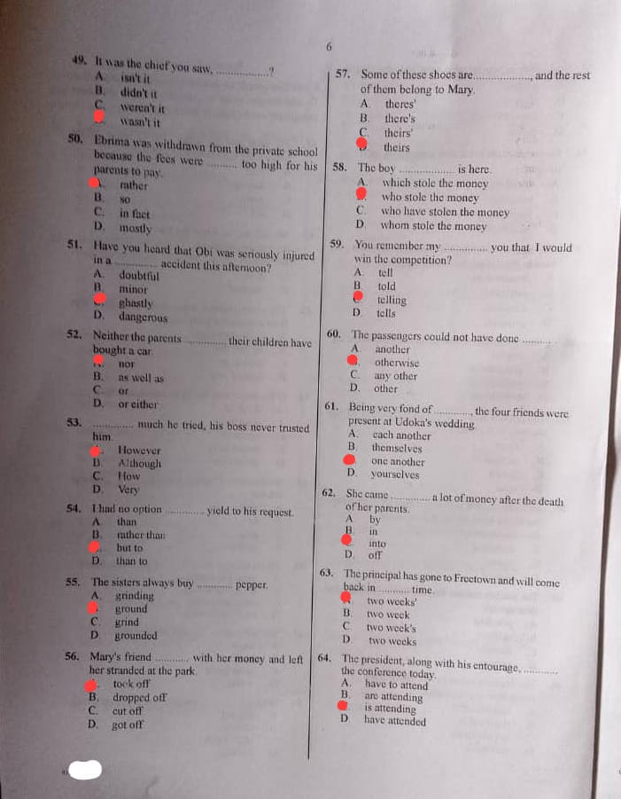
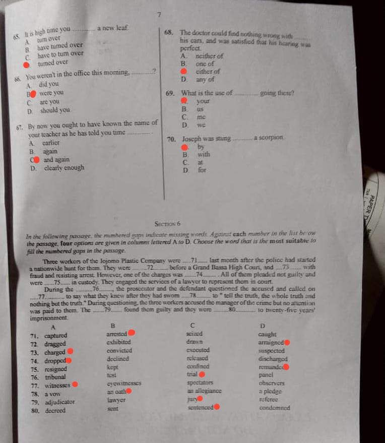

====================================
====================================






====================================
====================================
45 Awolowo Road,
Ikeja, Lagos.
10th June 2026.
The Director,
Bright Future Foundation,
P.M.B. 1024,
Lagos.
Dear Sir/Madam,
I write on behalf of the students of Government Secondary School, Ikeja, to express our profound gratitude to your organization for selecting our school as the winner of your recent competition. We are highly delighted by this achievement and deeply appreciate your generous decision to undertake a project in our school as part of the prize.
After careful consideration of the most pressing needs of our school, I would like to suggest the construction and equipping of a modern school library. Although our school has recorded several academic successes over the years, one major challenge facing both students and teachers is the lack of a well-equipped library. The existing library is too small, contains outdated books, and cannot adequately serve the growing student population. A modern library would therefore be of immense benefit to the entire school community.
Firstly, the project will greatly improve the academic performance of students. A standard library stocked with current textbooks, reference materials, journals, and educational resources will provide students with access to valuable information beyond what is taught in the classroom. It will encourage independent learning, research, and wider reading habits. Students preparing for internal and external examinations such as WAEC, NECO, and JAMB will particularly benefit from the availability of relevant study materials. This will undoubtedly lead to better academic results and enhance the reputation of the school.
Secondly, the proposed library will help to promote a culture of reading among students. In recent times, many students spend more time on social media and entertainment than on academic activities. A comfortable and attractive library environment will motivate students to develop regular reading habits. Reading not only improves vocabulary and communication skills but also broadens knowledge and enhances critical thinking. As more students embrace reading as a hobby, the overall intellectual standard of the school will improve significantly.
Thirdly, the library will serve as a valuable resource centre for both students and teachers. Teachers will have access to updated instructional materials, educational publications, and research resources that can help them prepare more effective lessons. The facility can also be used for academic seminars, literary activities, and group study sessions. In addition, it will provide a quiet and conducive environment for learning, which many students currently lack at home.
Beyond these benefits, the library will remain a lasting legacy of your organization in our school. Future generations of students will continue to benefit from the project for many years to come. It will stand as a symbol of your commitment to educational development and youth empowerment.
I sincerely hope that you will consider this suggestion favourably. Once again, we appreciate your generosity and support towards improving the quality of education in our school.
Yours faithfully,
[SIGN SIGNATURE HERE]
Okafor Ebuka
Senior Prefect
Government Secondary School, Ikeja.
====================================
Malaria remains one of the most common diseases affecting students in Nigeria and many other African countries. It is caused by parasites transmitted through the bites of infected female Anopheles mosquitoes. Every year, thousands of students miss classes, examinations, and important school activities because of malaria. The disease not only affects students' health but also reduces their academic performance and productivity. Fortunately, malaria can be prevented if students adopt the right protective measures. Three important measures students should take to protect themselves against malaria are sleeping under insecticide-treated mosquito nets, maintaining a clean environment, and seeking prompt medical attention when symptoms appear.
The first and perhaps most effective measure is the use of insecticide-treated mosquito nets. Mosquitoes that transmit malaria are most active at night. Therefore, students should make it a habit to sleep under properly treated mosquito nets every night. These nets act as a physical barrier that prevents mosquitoes from biting while also killing or repelling them through the insecticide with which they are treated. Students living in hostels or at home should ensure that their nets are not torn and are properly tucked around their beds before sleeping. The consistent use of mosquito nets has been proven to significantly reduce the risk of malaria infection.
Another important measure is maintaining a clean and healthy environment. Mosquitoes breed in stagnant water and dirty surroundings. Students should therefore ensure that containers capable of holding water are properly covered or emptied regularly. Open gutters should be cleared, while bushes and tall grasses around homes and school premises should be cut down frequently. Empty cans, old tyres, broken pots, and other objects that collect rainwater should be disposed of properly. School authorities and students should also participate in regular environmental sanitation exercises. By eliminating mosquito breeding sites, the number of mosquitoes in the environment can be greatly reduced, thereby lowering the chances of malaria transmission.
The third measure is seeking prompt medical attention whenever malaria symptoms are noticed. Some students ignore symptoms such as fever, headache, body weakness, loss of appetite, and chills, hoping that they will disappear on their own. This attitude can be dangerous because untreated malaria may become severe and lead to serious health complications. Students should report such symptoms to their parents, guardians, teachers, or healthcare providers immediately. Early diagnosis and treatment help to prevent complications and ensure quick recovery. Students should also avoid self-medication and instead follow the advice of qualified medical professionals.
In addition to these measures, students can protect themselves by wearing clothes that cover most parts of the body during the evening, using mosquito repellents where necessary, and ensuring that doors and windows are fitted with mosquito screens. These additional precautions further reduce contact with mosquitoes and provide greater protection against malaria.
In conclusion, malaria is a preventable disease that continues to affect many students. By sleeping under insecticide-treated mosquito nets, maintaining a clean environment, and seeking prompt medical attention when symptoms appear, students can effectively protect themselves against malaria. If these measures are consistently practised, the incidence of malaria among students will be greatly reduced, leading to better health, improved school attendance, and enhanced academic performance.
Okafor Daniel
(SS3B)
====================================
====================================
====================================
====================================
Adiga got married at the age of thirty.
(i) He tried to avoid taking a wife.
(ii) He also tried to avoid having children.
He was referring to the time when his mother would die.
He took good care of her throughout her illness and providing all the assistance she required.
The irony was that although the birth of a child normally brings joy, Adiga had deliberately delayed having children because he regarded them as possible obstacles to his career ambitions.
"The law enforcement officer has set himself...."
"... secured uniformed employment..."
The expression means that misfortunes came one after another in quick succession.
(i) Adverbial clause of place.
(ii) It modifies the verb "moved".
(i) Legitimate - lawful
(ii) Encumbrances - hindrances
(iii) Passing - death
(iv) Tremulous - quivering
(v) Ravaged - destroyed
(vi) Dogged - determined
====================================
A school owner considers providing suitable accommodation in a conducive environment for learning.
He also ensures the availability of adequate teaching and learning facilities.
A school owner considers employing qualified and competent teachers.
School owners obtain funds through school fees and charges for various facilities.
They generate income from the sale of books, uniforms and other school items.
School owners raise additional revenue through levies and proceeds from school events and activities.
====================================
====================================
====================================
====================================
====================================
====================================
====================================
====================================
====================================
Check back if we have not posted!!!.